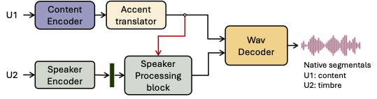
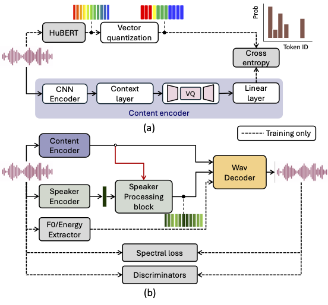
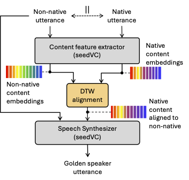
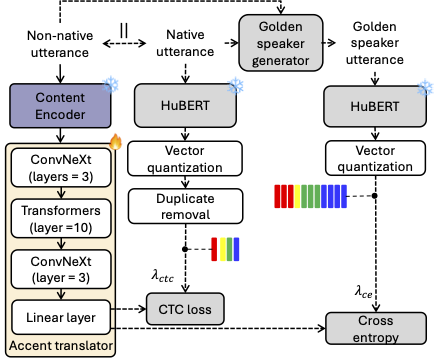

Anonymous submission to Interspeech 2026
Speaker anonymization (SA) systems typically modify voice identity (e.g., timbre) while leaving regional or non-native accents intact, which is problematic because accents can substantially narrow the anonymity set. To address this issue, we present PHONOS, a streaming module for real-time SA that also replace/mask accented speech to match that of a target speaker. Our approach pre-generates golden speaker utterances that preserve source timbre and rhythm but replace foreign content tokens with native ones using silence-aware DTW alignment and zero-shot voice conversion. These utterances supervise a causal accent translator that maps non-native content tokens to native equivalents with at most 40ms look-ahead, trained using joint cross-entropy and CTC losses. Built on TVTSyn, our method achieves under 241 ms end-to-end GPU latency. Our evaluations show an 81% reduction in non-native accent confidence, with listening-test ratings consistent with this shift, and reduced speaker linkability as accent-neutralized utterances move away from the original speaker in embedding space.




| Speaker | Utterance | Original | Parallel Native | Golden Speaker | FAC (PHONOS) |
|---|---|---|---|---|---|
| Hindi Female | utt_001 | ||||
| utt_002 | |||||
| utt_003 | |||||
| utt_004 | |||||
| Assamese Male | utt_001 | ||||
| utt_002 | |||||
| utt_003 | |||||
| utt_004 |
| Speaker | Utterance | Original | Parallel Native | Golden Speaker | FAC (PHONOS) |
|---|---|---|---|---|---|
| TNI | arctic_b0442 | ||||
| arctic_b0443 | |||||
| arctic_b0470 | |||||
| arctic_b0532 | |||||
| ASI | arctic_b0514 | ||||
| arctic_b0518 | |||||
| arctic_b0523 | |||||
| arctic_b0533 |